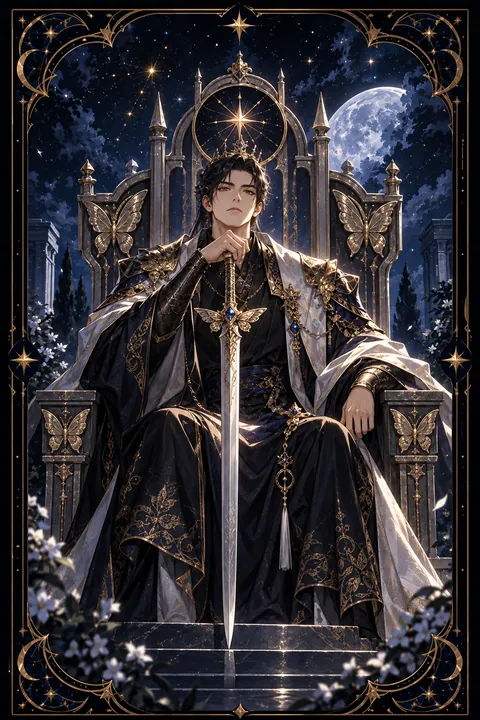

검 왕 카드 — 원칙과 공정한 판단
검 왕 카드 한눈에 보기
검 왕 카드 상징 읽기

동네보살의 카드 그림은 전통 라이더–웨이트 덱의 뜻을 새 그림으로 옮긴 것입니다. 아래 상징 설명은 전통 덱의 그림을 기준으로 합니다.
검 왕은 정면을 똑바로 바라보며 옥좌에 앉아 있고 오른손에는 곧게 선 검이 들려 있습니다. 궁정 카드 가운데 정면을 응시하는 모습은 흔하지 않아 숨김없이 진실을 마주하는 태도를 강조합니다. 곧은 검은 공정한 판단과 흔들리지 않는 원칙을 상징합니다.
옥좌 등받이에는 나비와 초승달이 새겨져 있습니다. 나비는 생각의 변화와 영혼의 성장을 뜻하며 지성이 단단한 권위로 자라났음을 보여 줍니다. 왕의 푸른 옷은 맑은 지성을 나타내고 붉은빛 망토는 행동으로 옮기는 결단을 뜻합니다.
배경에는 낮게 깔린 구름과 몇 그루의 나무가 있고 하늘 높이 새 두 마리가 날고 있습니다. 두 마리 새는 서로 다른 의견을 균형 있게 저울질하는 판단력을 상징합니다. 엄격하지만 공정한 이 왕은 논리와 윤리를 함께 갖춘 지도자의 모습입니다.
검 왕 카드 정방향 뜻
정방향 검 왕은 논리와 원칙에 따라 공정하게 판단하는 시기를 뜻합니다. 감정이나 사적인 관계에 흔들리지 않고 사실과 근거를 바탕으로 결론을 내릴 수 있습니다. 복잡한 문제에 명확한 기준을 세우고 주변을 이끄는 역할을 맡게 될 가능성이 큽니다.
이 카드는 전문성과 지적 권위도 상징합니다. 오랫동안 쌓아 온 지식과 경험이 인정받는 때이며 당신의 판단에 많은 사람이 귀를 기울입니다. 반대로 스스로 판단하기 어려운 문제라면 해당 분야의 전문가에게 조언을 구하는 것이 현명합니다.
중요한 결정일수록 이유를 분명히 설명하고 기록으로 남겨 두세요. 원칙을 지키는 태도는 당장은 딱딱해 보여도 시간이 지날수록 깊은 신뢰로 돌아옵니다. 다만 논리만 앞세우지 말고 상대의 입장을 한 번 더 헤아리면 판단이 더 단단해집니다.
검 왕 카드 역방향 뜻
역방향 검 왕은 지식과 권위가 잘못된 방향으로 쓰이는 모습입니다. 논리를 무기 삼아 상대를 몰아붙이거나 지위를 이용해 자신의 뜻을 강요하는 태도가 드러날 수 있습니다. 원칙을 말하면서도 자신에게 유리한 쪽으로 기준을 바꾸는 이중적인 모습이 나타나기도 합니다.
주변의 누군가가 권위를 앞세워 부당한 요구를 하는 상황일 수도 있습니다. 그런 경우라면 감정적으로 대응하기보다 사실과 근거를 기록으로 남기고 공식적인 절차를 따르는 것이 스스로를 지키는 방법입니다.
한편 스스로 원칙을 조금씩 굽히며 합리화하고 있지는 않은지 돌아볼 필요도 있습니다. 판단이 차갑게만 흐르고 있다면 사람의 마음을 헤아리는 여유를 되찾아 보세요. 공정함을 회복하면 잃었던 신뢰도 차츰 돌아옵니다.
연애에서 검 왕 카드
솔로라면 감정보다 가치관과 신뢰를 중심으로 상대를 고르는 시기입니다. 대화가 통하고 말과 행동이 일치하는 사람에게 끌리게 됩니다. 지적인 모임이나 일로 만나는 자리에서 인연이 생길 가능성이 있습니다.
함께하는 사람이 있다면 서로를 존중하며 앞날을 구체적으로 그려 보기에 좋은 시기입니다. 약속을 지키고 책임감 있게 행동하는 모습이 관계에 안정감을 줍니다. 다만 갈등이 생겼을 때 옳고 그름을 따지는 데만 집중하면 상대는 이해받지 못한다고 느낄 수 있습니다. 논리적인 설명 앞에 상대의 감정을 먼저 인정하는 한마디를 건네 보세요. 연인은 판결을 내려야 할 상대가 아니라 함께 답을 찾아가는 동반자라는 점을 기억하면 관계가 한층 깊어집니다. 중요한 결정은 서로의 생각을 충분히 들은 뒤에 함께 내리는 것이 좋습니다.
재회·속마음 질문에서 검 왕 카드
재회 질문에서 검 왕은 감정보다 현실적인 판단이 결과를 좌우한다는 뜻입니다. 상대는 다시 만나는 것이 합리적인지 차분히 저울질하고 있을 수 있습니다. 눈물로 설득하기보다 헤어진 원인을 객관적으로 짚고 무엇이 달라졌는지 분명히 보여 주는 편이 좋습니다. 거꾸로 선 검 왕이라면 자존심이나 고집이 대화를 가로막고 있을 수 있습니다. 누가 옳았는지 따지는 대화는 관계를 되돌리지 못하니 서로의 입장을 인정하는 데서 시작해 보세요. 다시 대화를 시작한다면 약속한 것은 작은 것이라도 지켜 신뢰를 쌓는 모습이 무엇보다 중요합니다. 말보다 일관된 행동이 상대의 판단을 바꿉니다.
일·금전에서 검 왕 카드
일과 직장에서는 전문성과 판단력을 인정받는 시기입니다. 기준을 세우고 결정을 내려야 하는 자리에서 능력을 발휘할 수 있으며 관리자나 전문가로서의 역할이 커질 수 있습니다. 결정의 근거를 명확히 설명하면 팀의 신뢰가 두터워집니다. 규정이나 절차가 애매한 부분이 있다면 문서로 정리해 두는 것이 나중의 분쟁을 막아 줍니다.
재산 관리에서는 원칙에 따라 계획적으로 움직이는 것이 좋습니다. 계약서나 약관은 꼼꼼히 확인하고 모르는 부분은 전문가에게 물어보세요. 권위 있어 보이는 말만 믿고 결정하기보다 근거를 스스로 따져 보는 태도가 손해를 막아 줍니다. 결정의 근거를 문서로 남겨 두면 나중에 흔들릴 때 기댈 곳이 됩니다.
검 왕 카드는 예일까 아니오일까
사실과 원칙에 근거해 판단하면 원하는 결론에 이를 수 있으므로 예에 가깝습니다. 뒤집힌 카드라면 권위나 고집이 판단을 비틀고 있어 근거를 다시 따져 봐야 합니다.
자주 묻는 질문
검 왕 카드 역방향은 나쁜 뜻인가요?
역방향 검 왕은 지식과 권위가 잘못된 방향으로 쓰이는 모습입니다. 논리를 무기 삼아 상대를 몰아붙이거나 지위를 이용해 자신의 뜻을 강요하는 태도가 드러날 수 있습니다. 원칙을 말하면서도 자신에게 유리한 쪽으로 기준을 바꾸는 이중적인 모습이 나타나기도 합니다.
검 왕 카드가 연애 질문에 나오면요?
솔로라면 감정보다 가치관과 신뢰를 중심으로 상대를 고르는 시기입니다. 대화가 통하고 말과 행동이 일치하는 사람에게 끌리게 됩니다. 지적인 모임이나 일로 만나는 자리에서 인연이 생길 가능성이 있습니다.
타로 카드는 어떻게 뽑나요?
타로 카드 페이지에서 78장을 섞으면 그중 22장이 펼쳐집니다. 마음이 가는 세 장을 고르면 과거·현재·미래 자리에 놓이고, 한 장씩 뒤집어 자리와 방향에 맞는 풀이를 읽습니다. 정방향과 역방향은 섞는 순간 정해집니다.